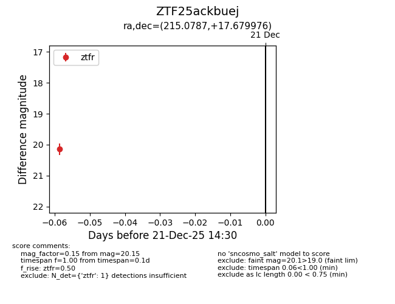
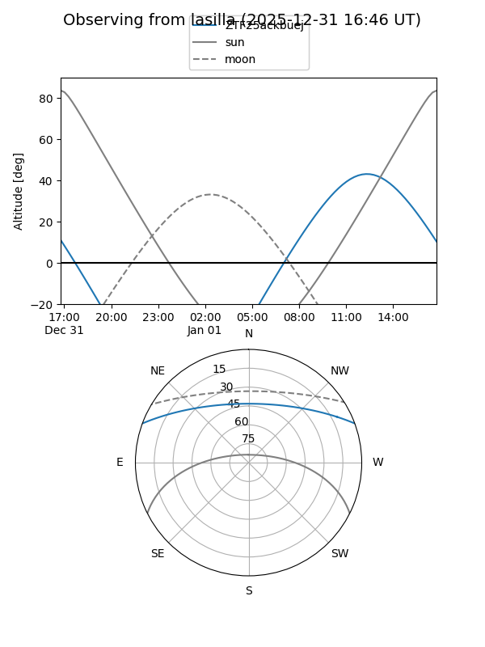
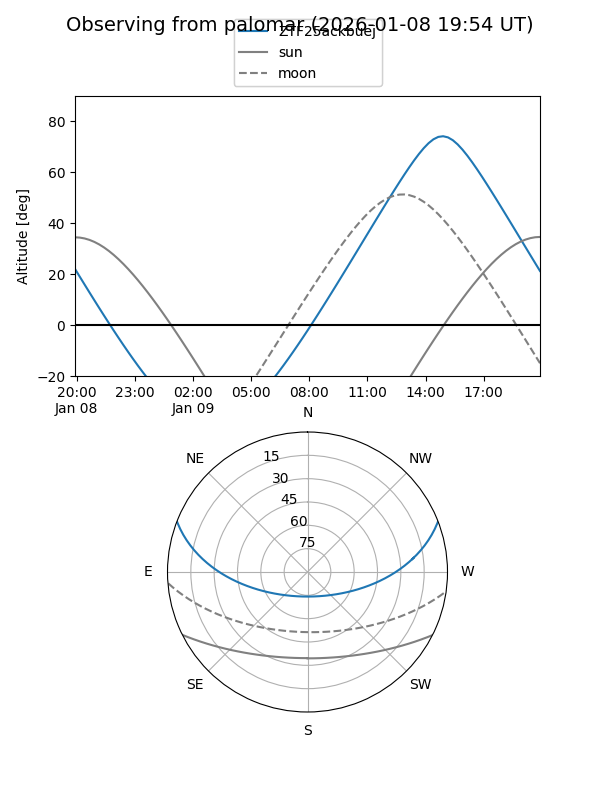

ZTF25ackbuej
Target ZTF25ackbuej at 2025-12-31 17:00
Aliases and brokers:
FINK:
Lasair:
ALeRCE:
alt names
ZTF25ackbuej (ztf,fink_ztf)
Coordinates:
equatorial (ra, dec) = 215.0787,+17.67998
equatorial (HMS+DMS) = 14:20:18.88,+17:40:47.91
galactic (l, b) = (12.8250,+67.43856)
Flags:
Photometry:
last ztfr=20.15
1 ztfr detections
Lightcurve

Visibility


Additional plots